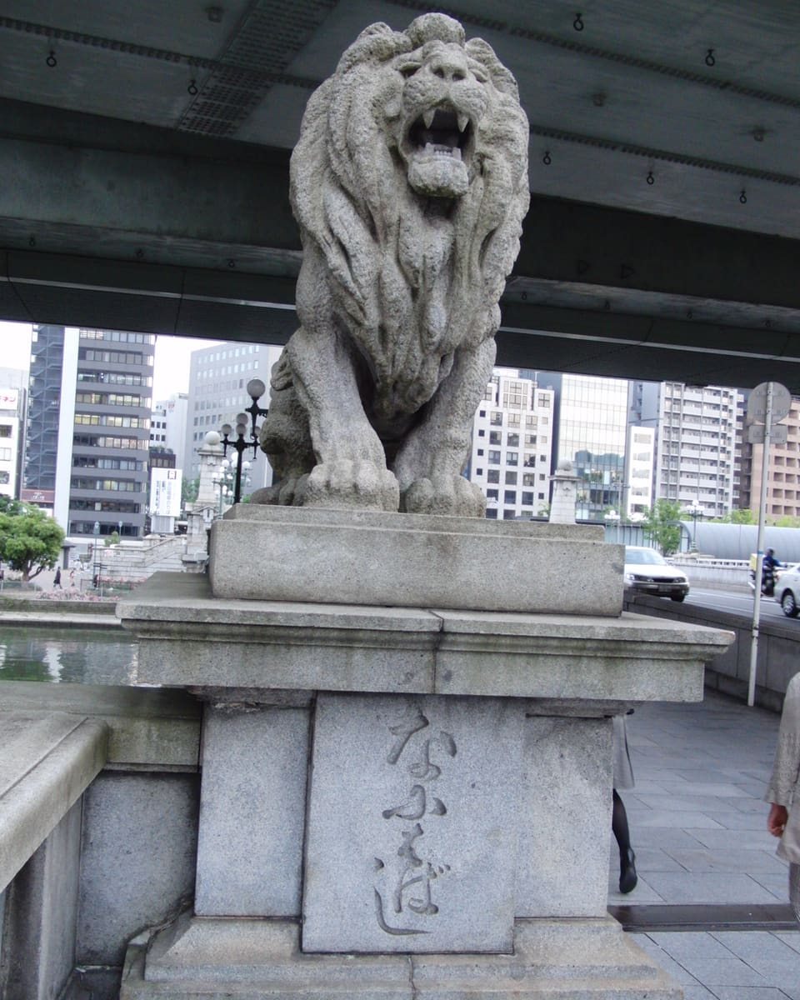
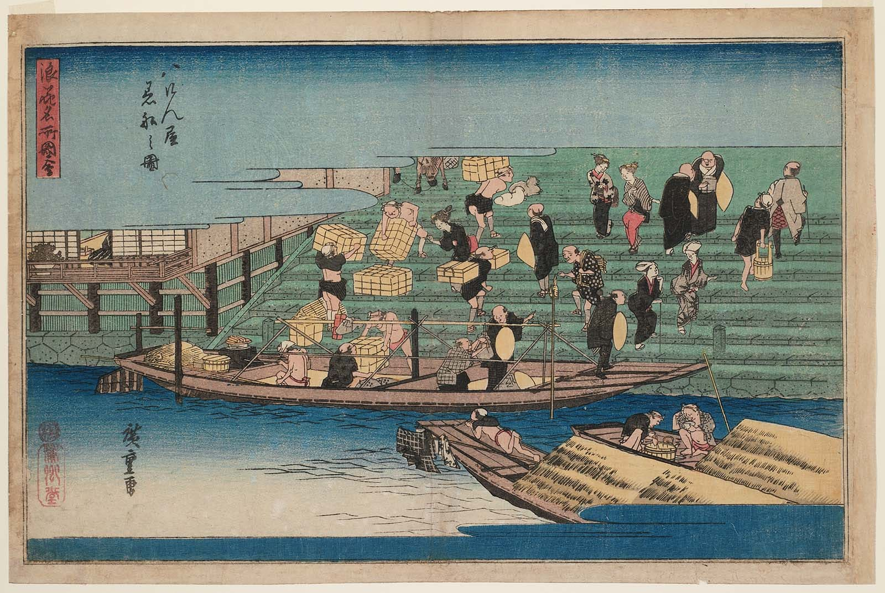
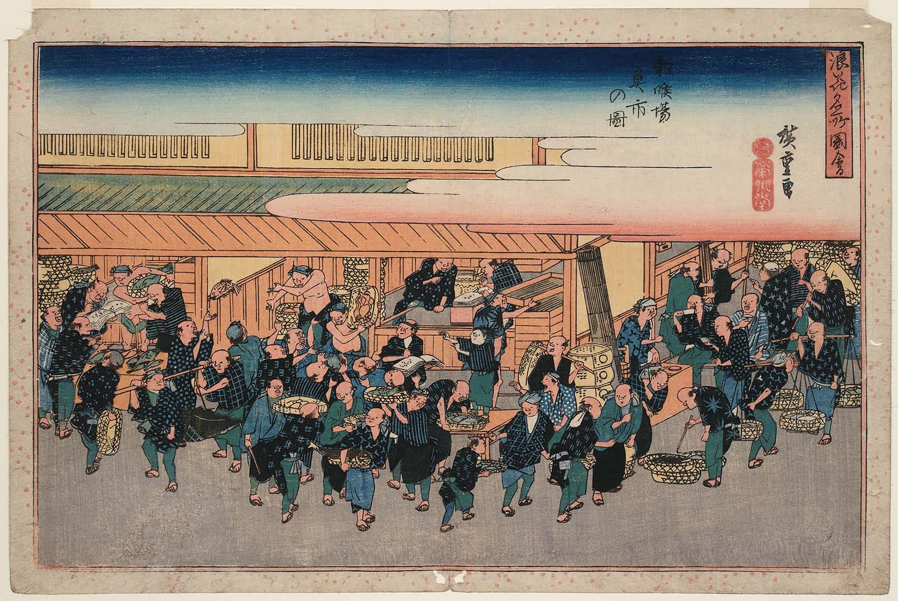
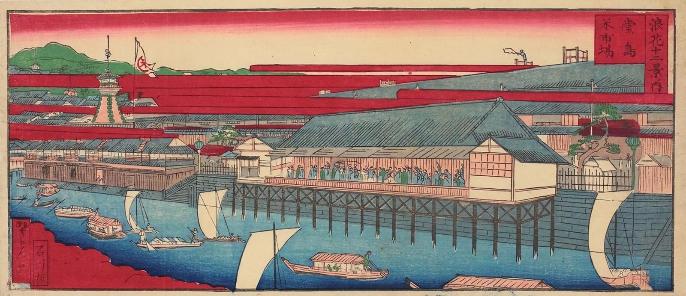
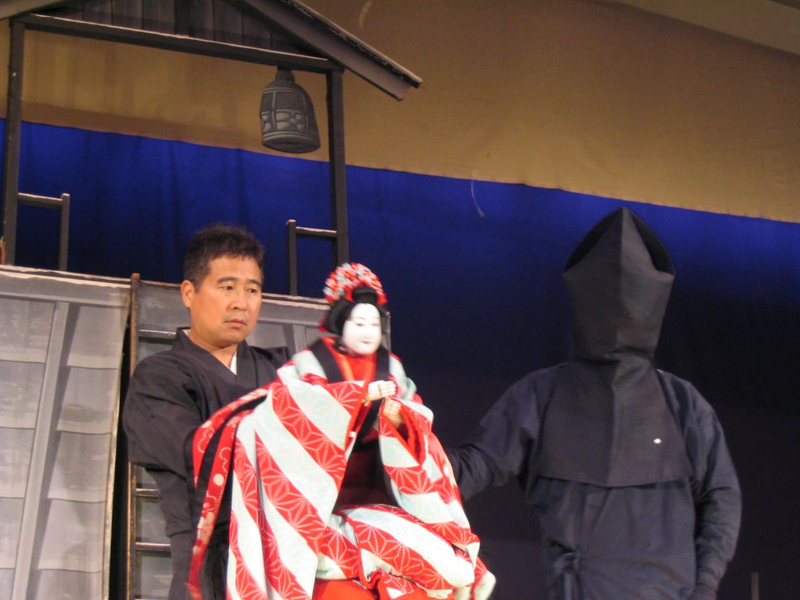

Connected business softwareつながる業務ソフトウェア
Bring orders, inventory, customer records, and approvals into a workflow that staff can follow.受注、在庫、顧客情報、承認を、スタッフが迷わずたどれる一つの業務の流れにまとめます。
01
Animation: a bridge is planned, and two boats sail in loaded with stones. Stone by stone, their cargo is lifted off the decks and laid into the two abutments. The boats sail away, the two halves of the deck meet in the middle, and orders start to flow across it as data while boats launch on the river below. アニメーション：橋が設計され、石を積んだ二艘の舟がやって来ます。舟の石は一つずつ運び上げられ、二つの橋台に積まれていきます。舟が去ると、両側から伸びた橋桁が中央でつながります。やがて注文がデータとして橋を渡り、川には舟が漕ぎ出していきます。
Osaka IT company · Business software · AI · Cloud 大阪のIT企業 · 業務ソフトウェア · AI · クラウド
Naniwa Nexus Co., Ltd.
石を積み、舟を出す。Lay the stone. Launch the boat.
Naniwa Nexus is an Osaka IT company. We build business software, AI applications, and shared information systems that people can use in everyday business — and that let ability in one place meet opportunity in another. Naniwa Nexusは大阪のIT企業です。日々のビジネスで使える業務ソフトウェア、AIアプリケーション、共有型の情報システムをつくり、ある場所の能力と、別の場所の機会が出会える場をつくります。
Business focus事業内容
We focus on workflows where disconnected information creates repeated work or slows customer service. 情報が分断されているために同じ作業が繰り返されたり、お客様への対応が遅れたりしている業務に焦点を当てます。
Small and midsize businesses in Osaka and Kansai, especially these four kinds of business.大阪・関西の中小企業の皆様、とくに次の四つの業種を想定しています。
Bring orders, inventory, customer records, and approvals into a workflow that staff can follow.受注、在庫、顧客情報、承認を、スタッフが迷わずたどれる一つの業務の流れにまとめます。
01
Assist with document processing, internal knowledge search, and customer responses, with review suited to the task.書類処理、社内ナレッジの検索、お客様への返信を支援します。確認の仕組みは、業務の内容に合わせて設計します。
02
Build supplier and partner systems with clear permissions and traceable changes. Consider blockchain where the use case supports it.明確な権限と追跡できる変更履歴を備えた、仕入先・取引先とのシステムを構築します。用途に適う場合はブロックチェーンも検討します。
03
Provide customer portals, maintain systems, train staff, and improve the product as the business changes.顧客ポータルの提供、システムの保守、スタッフの研修を行い、事業の変化に合わせてプロダクトを改善し続けます。
04
The concept in practice実践の姿
Consider a wholesaler receiving orders by email and entering them manually. We would connect order capture to inventory, use AI to prepare structured order details, and let staff resolve uncertain entries. メールで注文を受け、手作業で入力している卸売業者を例に考えます。受注の取り込みを在庫と連携させ、AIで注文内容を構造化されたデータに整え、判断が不確かな項目はスタッフが確定できるようにします。
Illustration with sample dataサンプルデータによる説明図
Try it: answer the question the AI flags.AIが確認を求めている項目に答えてみてください。
Good morning. Could you send 20 cases of the usual soy sauce and 12 of the white miso for Thursday? Thanks, Tanaka おはようございます。いつもの醤油を20ケースと、白味噌を12、木曜日にお願いします。田中
AI drafts a structured orderAIが注文の下書きを作成
1 entry needs a person.確認が必要な項目：1件
This is what laying the stone and launching the boat mean in our daily work. これが、日々の仕事における「石を積み、舟を出す」の意味です。

Our name社名の由来
Naniwa is a historical name for Osaka. Nexus means a connection or meeting point. Together, the name describes a place where ideas, engineering, and commercial relationships come together to create useful products. ナニワは大阪の古い呼び名です。ネクサスは「つながり」や「結節点」を意味します。二つを合わせたこの社名は、アイデアと技術、そして商いの関係が集まり、役に立つプロダクトが生まれる場所を表しています。
ナニワ
Naniwa
A historical name for Osaka, the city of the 808 bridges.大阪の古い呼び名。「八百八橋」とうたわれた水の都。
ネクサス
Nexus
A connection, or a meeting point.つながり、結節点。
Our Osaka identity is expressed through what we build and how we earn trust. 私たちの大阪らしさは、何をつくり、どのように信頼を得るかに表れます。
Our mottoモットー
Each half of our motto comes from a place in Osaka, and each names a responsibility we take on. モットーの前半と後半は、それぞれ大阪の情景に由来し、私たちが担う責任を表しています。
石を積むLay the stone
Building foundations that deserve trust, and taking responsibility for the work. 信頼に値する土台を築き、仕事に責任を持つこと。
Drawn from Osaka Castle's stone walls大阪城の石垣から
舟を出すLaunch the boat
Putting a product into real use, listening to the people who rely on it, and moving forward with partners. プロダクトを実際の仕事で使っていただき、頼りにしてくださる方々の声を聞き、パートナーと共に前へ進むこと。
Drawn from the Tenjin Matsuri procession on the Okawa River大川をゆく天神祭の船渡御から
Our Osaka story大阪の物語
Our identity joins the engineering discipline suggested by Osaka Castle with the coordinated energy of Tenjin Matsuri and the practical judgment of a merchant city. 大阪城が示す技術の規律、天神祭の息の合った活気、そして商都の実践的な判断。私たちのアイデンティティは、この三つを結びつけています。

天下の台所
During the Edo period, Osaka became known as tenka no daidokoro, the nation's kitchen, as goods from across Japan gathered and were traded there. 江戸時代、全国から物資が集まり取引された大阪は「天下の台所」と呼ばれました。
We take that exchange of goods and knowledge as our starting point. Ideas and tools arrive from many places. Our work is to combine them into something a customer can use with confidence. 私たちは、この物と知恵の交流を出発点にしています。アイデアや道具は、さまざまな場所からやって来ます。それらを組み合わせ、お客様が安心して使えるものに仕上げることが、私たちの仕事です。
An image of accountable construction.責任ある築き方の姿。
An image of people coordinating distinct roles.異なる役割を担う人々が、息を合わせる姿。
A test for the result.成果を確かめるための問い。
Does the product make the customer's work better, and is the improvement worth its continuing cost? そのプロダクトは、お客様の仕事を良くしているか。その改善は、かかり続けるコストに見合っているか。
We want our customers to return because the answer remains yes. 答えが「はい」であり続けるから、お客様がまた戻ってきてくださる。私たちはそうありたいと考えています。
Vision and missionビジョンとミッション
We are an information technology company, and software is how we close that distance. Business software, AI applications, and shared information systems let separate teams share talent and resources, trust the record of what passes between them, and reach revenue neither side could reach alone. 私たちは情報技術の会社です。その隔たりを埋める手立てが、ソフトウェアです。業務ソフトウェア、AIアプリケーション、共有型の情報システムによって、離れたチームが人の力と資源を分かち合い、やり取りの記録を信頼し、どちらか一方だけでは届かない収益に手を伸ばせるようにします。
How we judge success成功の物差し
Management philosophy経営理念
Each principle starts from something Osaka built or sustained, and turns it into a way we work. それぞれの原則は、大阪が築き、受け継いできたものを出発点に、私たちの働き方へと置き換えています。
Principle 1原則 1
石に印を刻むPut your mark on the stone
From Osaka大阪から
The Tokugawa rebuilding of Osaka Castle began in 1620 and mobilized 64 daimyo families. Stones still bear crests and other marks associated with different construction sections.徳川幕府による大坂城の再築は1620年に始まり、64家の大名が動員されました。石垣の石には今も、各大名が受け持った丁場（工区）に関わる家紋などの刻印が残っています。
In our work私たちの仕事では
We use these surviving marks as a metaphor for accountable engineering. Every important component has a responsible owner. We record design decisions, identify the sources of data and dependencies, and give credit for contributions. Maintenance and recovery are part of the foundations we promise to support.こうして残る刻印を、責任あるエンジニアリングのたとえとしています。重要な構成要素には、必ず責任を持つ担当者がいます。設計上の判断を記録し、データや依存関係の出どころを明らかにし、貢献した人の功績を認めます。保守と復旧も、私たちが支えると約束する土台の一部です。

Principle 2原則 2
次の注文をいただくEarn the next order
From Osaka大阪から
We interpret Osaka's merchant heritage through repeat business earned by useful work.私たちは大阪の商人の伝統を、役に立つ仕事によって次のご注文をいただくこと、と受け止めています。
In our work私たちの仕事では
Before selecting a technology, we agree on the improvement the customer needs. After launch, we examine adoption, operating costs, and results. An AI application should save enough time or improve enough work to justify its use. We make room for experiments, give each one a clear question, and expand it when the evidence supports doing so.技術を選ぶ前に、お客様に必要な改善について合意します。導入後は、定着の度合い、運用コスト、成果を検証します。AIアプリケーションは、その利用に見合うだけ時間を節約し、仕事を良くするものでなければなりません。実験の余地を設け、それぞれに明確な問いを立て、根拠が得られたときに広げていきます。

Principle 3原則 3
信頼を仕組みにするMake trust part of the system
From Osaka大阪から
The Dojima Rice Exchange, officially authorized in 1730, used trading rules, membership, and clearing arrangements that helped make organized exchange possible.1730年に公認された堂島米会所では、取引のルール、会員制度、清算の仕組みが、組織的な取引を可能にしていました。
In our work私たちの仕事では
Its lesson for us is that trust needs understandable rules and reliable records. We define who may change data, how changes are recorded, and how discrepancies are resolved. Blockchain is a possible tool when organizations need a shared record. Its use must justify the operating cost and arrangements for managing that record.ここから学ぶのは、信頼にはわかりやすいルールと確かな記録が必要だということです。誰がデータを変更できるか、変更をどう記録するか、食い違いをどう解決するかを定めます。複数の組織が共有の記録を必要とするとき、ブロックチェーンは選択肢の一つです。ただしその利用は、運用コストと、記録を管理する体制に見合うものでなければなりません。
Principle 4原則 4
自らの舟を担い、川を敬うOwn your boat and respect the river
From Osaka大阪から
Tenjin Matsuri's boat procession is part of a shrine festival sustained by participating groups, including organizations known as kō.天神祭の船渡御は、「講」と呼ばれる団体をはじめ、参加する人々の集まりに支えられてきた神社の祭礼の一部です。
In our work私たちの仕事では
We draw from it the idea of distinct teams coordinating within a shared framework. Each team owns a clear customer outcome and makes its progress visible. Shared interfaces and agreed standards let their work fit together. Partners help shape the product and retain a clear understanding of their responsibilities and contribution.ここから、それぞれのチームが共通の枠組みの中で連携するという考え方を学びます。各チームはお客様にとっての明確な成果に責任を持ち、進み具合を見えるようにします。共通のインターフェースと合意された標準が、それぞれの仕事を一つにつなげます。パートナーはプロダクトづくりに加わり、自らの責任と貢献を明確に把握できます。

Principle 5原則 5
人の技を、舞台の中心にKeep skilled people in the performance
From Osaka大阪から
In Bunraku, three puppeteers coordinate different movements of a puppet, using practiced cues to work together.文楽では、三人の人形遣いが一体の人形の異なる動きを受け持ち、修練を重ねた合図で息を合わせます。
In our work私たちの仕事では
We draw a lesson about human skill and responsibility. When AI assists a workflow, people should know its role, who reviews important decisions, and how to correct a mistake. We design clear handoffs and useful feedback, and invest in the skills of the people using the product. The quality of their work remains our measure.ここから、人の技能と責任について学びます。AIが業務を支援するとき、人はAIの役割、重要な判断を誰が確認するか、誤りをどう正すかを知っているべきです。私たちは明確な引き継ぎと役に立つフィードバックを設計し、プロダクトを使う人々の技能に投資します。その人々の仕事の質こそが、私たちの物差しです。
Creating with the world世界と共に創る
Some people have rare ability and no environment to use it in. Others have the environment but not the means to make the most of it. Most of us accept that as how the world is; we would rather treat it as a problem information technology can work on. まれな能力を持ちながら、それを活かす環境がない人がいます。環境には恵まれていても、それを十分に活かす手立てがない人もいます。多くの場合、それは世の常として受け入れられています。私たちはむしろ、情報技術で取り組める課題として捉えたいと考えています。
Each side contributes the ability, market knowledge, or capacity it has. We build the systems that make them usable at a distance.それぞれが持つ能力、市場の知見、余力を出し合います。私たちは、それが離れた場所からでも活かせる仕組みをつくります。
Credit, responsibilities, and how the revenue is divided are agreed at the start.功績の帰属、責任、そして収益の分け方を、最初の段階で取り決めます。
Partners take part in defining products and test them with their own customers. What we build is designed for local languages and working practices.パートナーはプロダクトの定義に加わり、自らのお客様と検証します。つくるものは、現地の言語や働き方に合わせて設計します。
Separate teams, in separate countries, can contribute to one shared product.国を異にする離れたチームも、ひとつの共有プロダクトに貢献できます。
Our aim is not to export a finished product. It is to open revenue that none of us could reach alone — business that exists only because the work was shared. 私たちの目指すところは、完成したプロダクトを輸出することではありません。誰も単独では届かなかった収益を開くこと。仕事を分かち合ったからこそ生まれる事業です。
Our customer promiseお客様への約束
We will build something your team can depend on, show how it improves your work, and keep listening after launch. 皆様のチームが頼れるものをつくり、それが仕事をどう良くするかをお見せし、導入後も耳を傾け続けます。
We intend to earn the next order through the value of the last one. 前回の仕事の価値によって、次のご注文をいただく。それが私たちの目指す姿です。
石を積み、舟を出す。
Tenjin Matsuri boats on the Okawa River at sunset, Osaka夕日の大川をゆく天神祭の船（大阪）
Book a call通話を予約
Tell us about a workflow that creates repeated work or slows customer service. Before any technology is chosen, we'll talk through the improvement you need. Times are shown in your own time zone. 同じ作業の繰り返しや、お客様対応の遅れを生んでいる業務についてお聞かせください。技術を選ぶ前に、どのような改善が必要かを一緒に整理します。時刻はお使いのタイムゾーンで表示されます。
Prefer a new tab, or calendar not showing? Book on Calendly directly, or email hiroshiyamamoto@naniwanexus.com. 新しいタブで開きたい場合や、カレンダーが表示されない場合は、Calendlyで直接ご予約いただくか、hiroshiyamamoto@naniwanexus.com までメールでご連絡ください。
Book on CalendlyCalendlyで予約するContactお問い合わせ
A workflow to improve, a pilot to plan, or a partnership from another market. We reply in English or Japanese. 改善したい業務、計画中のパイロット、海外市場からの協業のご相談など。日本語・英語のどちらでもご返信します。
Write to usメールで
hiroshiyamamoto@naniwanexus.comTell us about the work, the people who do it, and what would make it better.どのような仕事を、どなたが担い、何が良くなればよいのかをお聞かせください。
Or talk with usまたは、通話で
Pick a time for a 30-minute video call.30分のビデオ通話を、ご都合のよい時間にご予約いただけます。
Book a call通話を予約する